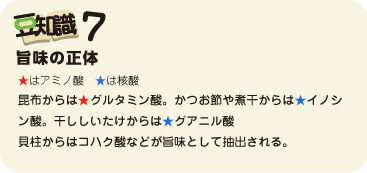

～ダシが決まれば旨さ倍増～
1.ダシの正体


ダシは、肉･魚・野菜などから旨味成分を抽出したものである。ダシの旨味の正体はアミノ酸や核酸。アミノ酸はたんぱく質を構成する基本単位であり、言わばアミノ酸はたんぱく質の素。そして命の素。
たんぱく質は、筋肉や臓器や皮膚、血液、髪や爪、ホルモンや酵素など、体の多くの部分を作っている。たんぱく質抜きに生命体はあり得ない。アミノ酸を美味しく感じるのは、体が必要としているから。一方、人間にとって危険な物、毒になる物に対しては、苦く、まずく感じることが多い。もちろん、苦くても、エグくても、無害でけっこう“いけてる”ものもあるけれど、知らない食材で苦味を感じたら、食べるのは控えたほうがいい。うまくできた人間の防御システムだ。
dashi_zairyo写真：だしの材料
2.ダシの材料
- 材料
- 日本料理…こんぶ、かつお節、煮干、干し椎茸など
- 西洋料理…牛、鶏、魚、野菜（玉ねぎ、セロリ、人参など）
- 中華料理…鶏肉、鶏がら、豚肉、貝柱、干しエビなど
3.和風ダシのとり方
dashinabe写真：だしの材料を煮出している鍋
基本的には材料を煮出せばダシが取れるのだけど、和風ダシはちょっとだけ注意が必要。- （１）煮干ダシ：濃い味なのでみそ汁や煮物に向く。
- ①水１L煮干３０ｇ（水の約３％）。鍋に水を張り、煮干の頭とはらわたを取って一晩置く。
- ②火に掛け、中火で４～５分煮出す。
- ③網ですくって煮干を取り出す。
- （２）混合ダシ（昆布とかつお節）：上品な旨味、プロの味。
- ①水１ℓに昆布１５ｇ（水の約1.5％）、かつお節１５ｇ（水の約1.5％）を用意する。
- ②昆布は５ｃｍ角に切って、表面の汚れを軽くふき取り、鍋に張った水につける。
- ③火に掛け、沸騰直前に昆布を取り出す。
- ④次にかつお節を加え、1分程煮出す。
- ⑤かつお節が鍋底に沈むのを待ち、網じゃくしですくう。
これが一番ダシで、お吸い物や、茶碗蒸しなどに使う。
次に、使った昆布とかつお節を鍋に戻し、①の半量の水（５００ｍｌ）を加え、2～3分煮出す。これが二番ダシで、煮物や親子丼などに使う。